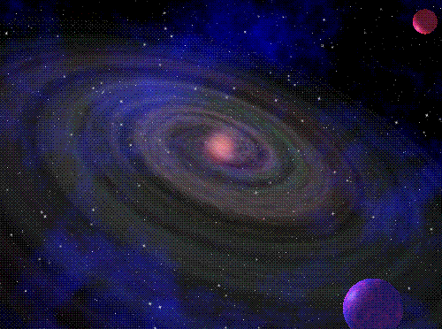
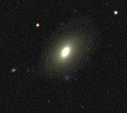
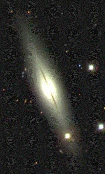
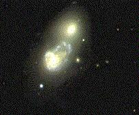

GALAXIAS
Las galaxias son agrupaciones de miles de millones de estrellas. Nuestra propia galaxia, es un ejemplo típico.
Estrellas, gas y polvo interestelar orbitan alrededor del centro de la galaxia debido a la atracción gravitatoria de todas las demás estrellas.
Nuevas generaciones de estrellas nacen a partir del gas que se condensa en regiones llamadas nubes moleculares gigantes y las estrellas, a veces, forman cúmulos de estrellas. Cuando una estrella alcanza el final de su evolución, puede devolver mucho gas al medio interestelar que será la fuente para una nueva generación de estrellas.
Podemos imaginar a las galaxias como sistemas que transforman gas en estrellas y éstas nuevamente a gas.
Cuando miramos una galaxia, la luz que vemos viene de dos fuentes. Primero, vemos luz de sus miles de millones de estrellas; puesto que muchas galaxias están muy lejanas, no vemos estrellas individuales - sólo la luz difusa combinada de todas.
Segundo, vemos luz fluorescente emitida por el gas ionizado por las estrellas luminosas calientes. Estas nubes de gas resplandeciente marcan los sitios donde nacen nuevas estrellas - a menudo, suelen parecerse a las cuentas de un collar por la forma en que se encadenan en los brazos de las galaxias espirales. La luz de las estrellas y del gas es amortiguada, a una cierta distancia, por el polvo dentro del medio interestelar de la galaxia.
Comparadas con el Sistema Solar, las galaxias son inmensas. Viajando a la velocidad de la luz, tomaría cerca de dos segundos ir de la Tierra a la Luna, y cerca de cinco horas y media, para ir del Sol a Plutón. Llevaría 25.000 años para ir desde el centro de la Vía Láctea a la posición del Sol. La Vía Láctea tiene más de cien mil millones de estrellas, pero las estrellas están tan lejos, unas de otras, que casi nunca colisionan. Incluso los pasos cercanos entre dos estrellas son sumamente excepcionales. Puesto que las estrellas raramente interactúan entre sí, sus órbitas, alrededor de la galaxia, raramente cambian.
Las órbitas de las estrellas reflejan el movimiento del gas a partir del cual se formaron las estrellas. Por lo tanto, la forma de una galaxia nos habla de las condiciones en que se formó, salvo que la galaxia haya sufrido una colisión.
Mientras que las estrellas dentro de una galaxia están separadas por distancias muy grandes comparadas con sus tamaños, las galaxias están separadas de sus vecinas más cercanas por distancias que son mucho más pequeñas cuando se comparan con las distancias entre las estrellas dentro de las galaxias.
Así, no son inusuales las colisiones entre galaxias conforme éstas se mueven a través del espacio intergaláctico. Cuando las galaxias colisionan se penetran unas a otras y se producen choques de estrellas y las nubes de gas, en una galaxia, son comprimidas y frenadas por nubes de gas de la otra galaxia. Las órbitas de las estrellas pueden ser sustancialmente perturbadas (debido a la fuerza gravitacional que una galaxia ejerce sobre la otra) y la comprensión de las nubes de gas puede estimularlas a colapsar y formar estrellas con una tasa especialmente alta.
LAS GALAXIAS ELÍPTICAS
Las elípticas tienen brillos que varían suavemente, disminuyendo gradual y constantemente, del centro hacia fuera. Si se observa una superficie con forma elíptica que rodea el centro de una galaxia elíptica, todas las estrellas, en esa superficie, tendrán brillos similares.
Las galaxias elípticas son también, casi todas, del mismo color: algo más rojas que el Sol. En el diagrama de diapasón son clasificadas como E, seguidas de un número indicando cuán elíptica es una galaxia dada. Cuanto más alto el número, más elíptica, o sea, más larga que ancha. El color rojizo de las elípticas (así como también otras observaciones más detalladas) nos dice algo importante sobre sus historias.
El color rojo de las galaxias viene de las estrellas más viejas y frías. El hecho de que la mayor parte de la luz proviene de estrellas viejas sugiere que muchas elípticas se formaron hace mucho tiempo. El hecho de que el color de una elíptica sea más o menos el mismo a través de la galaxia, sugiere que la mayoría de las estrellas, en estas galaxias, se formaron en la misma época. Además, muchas galaxias elípticas, en el universo, se encuentran cerca de otras galaxias elípticas, en cúmulos de galaxias. En estos cúmulos, cerca del 75% de las galaxias son elípticas.
Esta acumulación también sugiere que se formaron hace mucho tiempo porque las galaxias probablemente se formaron primero en regiones de alta densidad como cúmulos de galaxia. Las galaxias más grandes, en el universo, son las galaxias elípticas gigantes.
Ellas pueden contener un billón de estrellas, o más, y alcanzar un tamaño de unos dos millones de años luz -unas 20 veces el de la Vía Láctea -. Algunas de ellas parecen contener agujeros negros supermasivos en sus corazones - monstruos que engullen estrellas, que son hasta tres mil millones de veces más pesados que el Sol -. Estas galaxias elípticas gigantes están en los corazones de los cúmulos de galaxias.
LAS GALAXIAS ESPIRALES Las galaxias espirales, tienen discos delgados de estrellas con bulbos brillantes, llamados núcleos, en sus centros.
En el caso de las galaxias, las ondas de densidad presionan las nubes de gas interestelar, causando que nuevas estrellas se formen dentro de las nubes. Algunas estrellas nacidas a partir de allí son masivas, calientes y brillantes, por lo que hacen que los brazos espirales sean brillantes.
Estas estrellas masivas son azules o blancas, por lo que los brazos espirales también parecen blanco azulados. Vistos de perfil, los brazos espirales, a menudo, parecen surcos oscuros porque contienen mucho polvo interestelar que bloquea la luz del bulbo.
Los espacios entre los brazos contienen las estrellas más viejas que no son tan brillantes. Aún así, los núcleos de las espirales son, a menudo, rojos, como las galaxias elípticas, sugiriendo que están compuestos por estrellas más viejas. En algunas espirales, las ondas de densidad organizan las estrellas del centro en una barra. Los brazos de las galaxias espirales barradas forman espirales hacia afuera a partir de los extremos de la barra.
La Vía Láctea puede caer en esta clase de espirales, llamadas espirales barradas. En el sistema de diapasón de Hubble, las espirales normales son designadas como "S" y las variedades barradas "SB". A cada una de estas clases, a su vez, se las clasifica en tres subclases, de acuerdo al tamaño del núcleo y el grado en que los brazos espirales se enrollan. Las tres subclases se denotan con las letras minúsculas "a", "b" y "c". También hay algunas galaxias intermedias entre las elípticas y las espirales. Estas galaxias intermedias tienen la forma del disco característica de las espirales, pero no tienen brazos espirales. Estas formas intermedias tienen la designación "S0".
Tres galaxias espirales se muestran abajo.


LAS GALAXIAS IRREGULARESes una galaxia que no encaja en ninguna clasificación de galaxias de la secuencia de Hubble. Son galaxias sin forma espiral, lenticular ni elíptica.
Algunas galaxias irregulares son pequeñas galaxias espirales distorsionadas por la gravedad de un vecino mayor. Las galaxias irregulares no tienen una forma particular. Ellas están entre las galaxias más pequeñas y están llenas de gas y polvo. Teniendo una gran cantidad de gas y polvo, significa que estas galaxias tienen una gran cantidad de formación de estrellas llevándose a cabo en el interior de ellas. Esto puede hacerlas muy brillantes.
Las Nubes de Magallanes Grande y Pequeña, son ejemplos de galaxias irregulares. Ellas son dos galaxias pequeñas que viajan en órbita alrededor de nuestra propia galaxia, la Vía Láctea. Alrededor del 15% de todas las galaxias son irregulares.Es la última clase de galaxias, contiene una mezcla de formas -algo que no parece ni espiral ni elíptica-. Cualquier galaxia de forma no identificada - cuyas estrellas, gas y polvo se esparcen al azar- se clasifica como irregular.
Las irregulares son las galaxias más pequeñas, y pueden contener no más de un millón de estrellas. Pueden ser los ladrillos para formar las primeras galaxias grandes. Muchas galaxias irregulares pequeñas orbitan la Vía Láctea, incluyendo a las Nubes Mayor y Menor de Magallanes. Hubble reconoció dos tipos de galaxias irregulares, Irr I e Irr II. Irr I es el tipo más común de galaxias irregulares.
Este tipo parece ser una extensión de las galaxias espirales, más allá de Sc, en galaxias con estructura espiral no discernible. Las galaxias Irr I son azules, muy dispersas, y con poco o ningún núcleo. Las galaxias Irr II son raras. Este tipo incluye varios tipos de galaxias caóticas que parecen haberse formado de muchas formas diferentes.